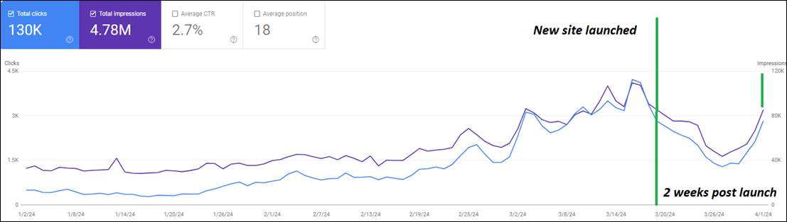
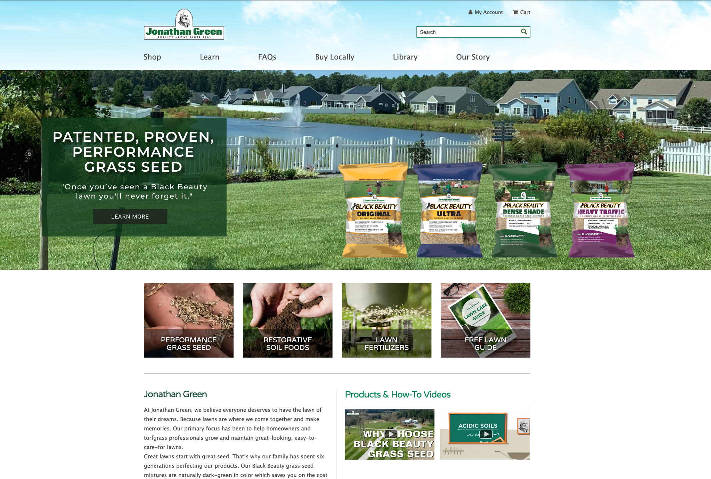

How I re-architected the site's URLs mid-redesign, without losing our rankings.

The URL migration was the single largest threat to the website redesign project. Thousands of 301 redirects, canonicalization, sitemap resubmission, and a robots.txt audit needed to hold, or the business stood to lose the organic traffic it depended on. I identified that risk up front, mitigated it before launch, and monitored it closely after: organic impressions and clicks returned to pre-launch levels within two weeks.
Jonathan Green needed a modern site with a UX that converted far better than the old one. I used that redesign as the moment to also re-architect a dated, messy URL structure, restructuring thousands of URLs and protecting years of hard-won domain authority in a single launch.
The risk was real: most of the site's revenue came from organic search, and changing this many URLs at once could have erased it. Instead, the site rebounded within two weeks.
- URL Architecture & Strategy
- 301 Redirect Mapping
- Canonicalization & Canonical Tags
- Metadata & Title Tag Migration
- XML Sitemaps & Robots.txt
- GA4 Conversion Tracking
- Technical QA & Reindexing
A better site, without throwing away the SEO behind it.
Each thing putting the migration at risk, lined up against what I did to protect it.
A modern redesign on a shaky SEO foundation

Dated .html URLs
Every URL still ended in “.html”, a legacy structure that looked outdated and limited how the site could grow.
A structure bots couldn't follow
The URL hierarchy didn't reflect the site, and duplicate variations competed against each other, splitting ranking signal.
A redesign that risked everything
Changing thousands of URLs at once threatened years of domain authority, and the organic traffic that drove most of our revenue.
A clean architecture, migrated without losing ground

Re-architected the URL structure
Replaced “.html” URLs with a clean, hierarchical structure that mirrors the site and gives Google a clear map to crawl.
Redirects & canonicals, everywhere
A 301 for every changed URL, plus canonical tags that roll variations up to one URL of truth, ending dead ends and duplicate content.
Protected years of authority
Kept the www domain to salvage backlink equity, migrated every title tag and 150+ meta descriptions, and verified the dev noindex was removed.
We re-architected thousands of URLs in a single launch and rebounded within two weeks, protecting the organic search that drives most of the site's revenue.
A five-step roadmap for changing everything without losing anything.
Redesigns fail their SEO in the gap between "looks great" and "still ranks." This is how I closed it.
SEO audit
Documented every ranking page, its metadata, internal links, and crawl health before development touched anything.
URL architecture
Re-mapped the hierarchy to drop dated “.html” URLs and mirror the new site, while preserving topical authority.
301 redirect strategy
Mapped every legacy URL to its closest new equivalent to carry link equity across the migration.
Technical QA
Validated redirects, canonicals, sitemaps, robots.txt, and indexability before launch, and again after.
Post-launch monitoring
Watched Search Console daily to catch and fix migration issues fast, instead of after they cost rankings.
Changing the URLs without losing the rankings.
The moves that let us re-architect the whole site and rebound fast.
The new structure drops the dated “.html,” nests pages by type, and gives Google a hierarchy it can actually crawl and trust.
Canonical tags roll every size and weight variation up to a single URL of truth, so variations stop competing with each other in search.
A brief, expected dip at launch, then a clear positive trajectory just two weeks after the new site went live.
Website redesigns are SEO projects.
Preparation wins migrations
Almost every migration failure happens before launch, not after, in the redirect map and the QA pass no one wanted to do.
Every design choice is an SEO choice
Navigation, URL structure, and content hierarchy all affect discoverability, not just how the site looks.
The best migrations go unnoticed
Users and Google shouldn't feel the seams. A rebound in two weeks means the plan held.